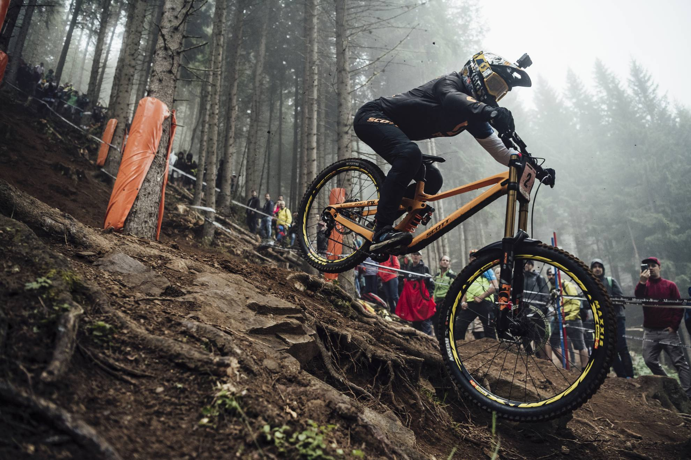
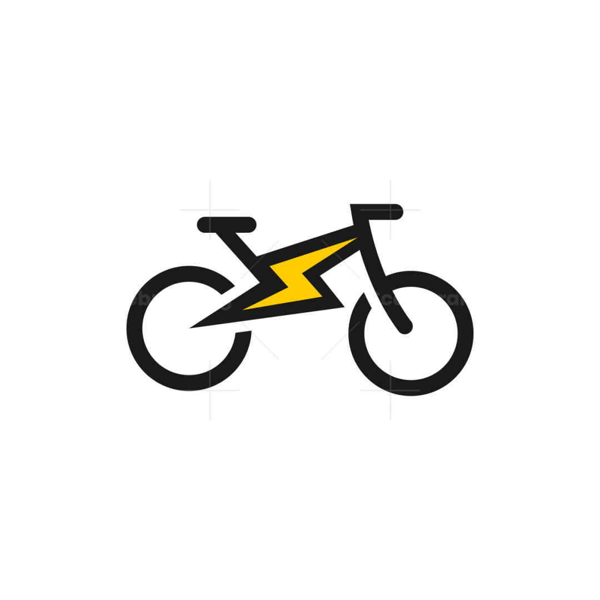
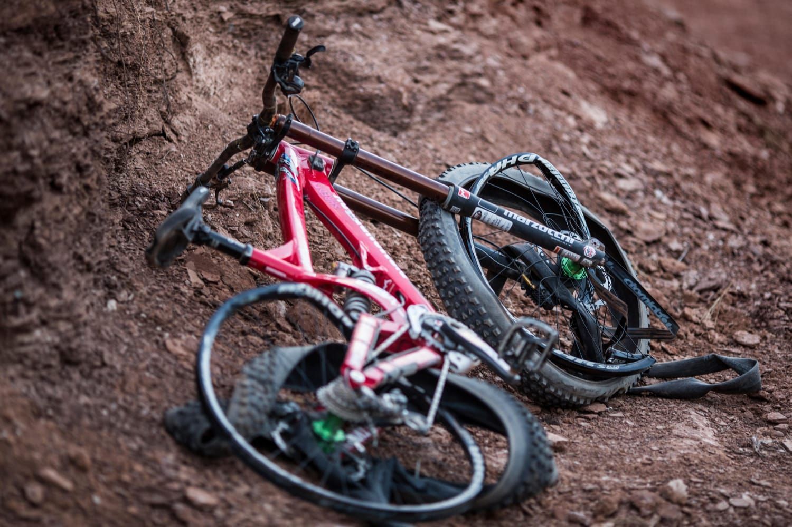
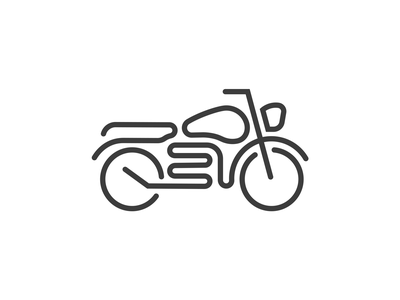

La bicicleta de montaña o bici de montaña (en inglés, mountain bike, MTB) es un tipo de
bicicleta diseñada para viajes por la montaña o el campo. Este deporte se necesita una bici
especial para la montaña. Es muy importante llevar todosm el equipo de proteccion ya que esl
deporte puede llegar a ser muy extremo. Practicamente hay lugares en todo el mundo para
poder practicar este deporte
Desarrollo
La bicicleta de doble suspensión representa el más importante avance del ciclismo en el siglo
XX; dado que proporciona a los ciclistas la posibilidad de llegar a lugares que en otro
tiempo se consideraban inaccesibles para dicho vehículo. mejorando la maniobrabilidad y
control en terrenos irregulares. A través de ella han aparecido nuevas modalidades de
ciclismo, acercándolo hacia el campo de los deportes extremos.
Motivacion
La verdad escogi este tema porque me gusta pero no lo practico. Lo helegi para aprender mas a
cerca de estas cosas tan extremas

Wallpaper MTB
Ranking
17/02/2022
Top 10 ciclistas de la historia
Se realizará un top 10 de los mejores ciclistas de la historia.
Nicholi Rogatkin
Danny Hart
Sam Hill
Brandon Semenuk
Nino Schurter
Tracy Moseley
Danny MacAskill
Aaron Gwin
Greg Minnaar
Rachel Atherton

Wallpaper MTB
Sitios oficiales
17/02/2022
5 sitios de MTB
Se realizará un listado con links a páginas relacionadas a MTB.
El video esta muy bueno, pero yo agregaria otras experiencias.
Me parece que el video esta muy padre y muy entretenido.
20/02/2022
Historia del MTB
En la década de los 70 un nuevo tipo de bicicleta empezó a aparecer en las carreteras de los
Estados Unidos, una bicicleta con un cuadro robusto, unas ruedas gruesas con frenos de goma,
etc. Se trataba de las primeras Mountain Bikes. 1
Los orígenes del ciclismo de montaña fueron totalmente inocentes. El concepto de MTB
empezó a gestarse en los años 70 cuando un grupo de jóvenes ciclistas del norte de
California empezaron a usar sus bicicletas en carreras de descenso por el monte
Tamalpais (California, EE. UU.). Buscaban nuevos retos, pero pronto se dieron cuenta que
las condiciones de las bicicletas de carretera no eran adecuadas para este tipo de
competición y se pusieron manos a la obra para modificar sus bicicletas y hacerlas más
resistentes. Utilizando elementos de otras bicis y motos crearon las
“clunkers”.1
Trabajé en una tienda de bicicletas. Me gustaba mucho ir a andar a unos caminos que
estaban cerca de mi casa, pero que no estaban pavimentados. Encontraba que era más
aventurero, pero las bicicletas de carrera que teníamos no eran para eso y se rompían.
Había unas bicicletas de “rueda ancha” pero las que teníamos en ese tiempo eran de 1930
o de 1950 y no tenían engranajes para subir montañas, por lo tanto, teníamos que gastar
el 80% de nuestro tiempo empujando las bicicletas cuesta arriba. Así que las mejoré y
les puse unos engranajes al neumático, lo que dio como resultado que pasáramos el 80%
del tiempo arriba de ellas.1
Una Mountain Bike tiene grandes neumáticos con protuberancias para la tracción en la
suciedad, tiene un engranaje de rango amplio para subir senderos con rocas y grandes
pendientes, posee amortiguadores sobre las ruedas delanteras y traseras para suavizar
las grandes rocas y raíces a lo largo de la pista. Una Mountain Bike es tu amiga, es la
mejor invención del mundo1
Estilos del MTB
Los más frecuentes son trail, descenso, cross country y enduro, aunque existen otros
segmentos como el marathon o el all-mountain. Aquí te contamos en qué consisten, en qué
se diferencian y cuál es la tipología que mejor se ajusta en función del uso que vayas a
darle a tu mountain bike.2
Es la modalidad más común de bicicletas de montaña. Se trata de bicicletas diseñadas para
hacer lo mismo que las de carretera, pero por tramos no asfaltados: rodar. No están
pensadas para una tipología concreta de terreno, sino que sirven para hacer un poco de
todo: pistas forestales, caminos de tierra, tramos pedregosos, sendas de monte…
Precisamente por esta versatilidad a menudo se las conoce también como all
mountain.2
Estas bicicletas están orientas para un único uso: descender a toda velocidad una colina,
una pista o un tramo urbano de escaleras. Son bicicletas de competición que se utilizan
en las pruebas de Downhill.2
Lo más habitual es que lleven doble suspensión, con un recorrido de amortiguación en la
horquilla muy amplio de hasta 220mm.Para que te hagas una idea: son las bicicletas que
ves en los vídeos de RedBull. 2
Tipos de bicicletas en la MTB
El cross country (también conocido como rally o XC) es una modalidad de competición donde
los bikers tienen que atravesar tramos de montaña a gran velocidad. No suele haber
grandes descensos. Al contrario, los trazados tienen a ser llanos o en subida con
obstáculos como zonas de piedras, rampas, terrenos embarrados o pistas que escoden
dificultades técnicas.Dicho de otra manera: son bicicletas para competir en los Juegos
Olímpicos, la Copa del Mundo y carreras de elite.3
Puedes encontrar bicicletas de montaña de competición con doble suspensión y horquillas de
un recorrido mayor, de hasta 120mm. Se las denomina bicicletas de marathon y se utilizan
en pruebas de larga distancia o trazados más técnicos. Son las bicicletas que se emplean
en carreras como la Titan Desert o la Andalucia Bike Race. También utilizan materiales
muy ligeros y ruedas de 29″ para rodar rápido, pero resultan algo más cómodas gracias a
la amortiguación central o trasera.
3
Moab, en el condado de Grand, Utah, es ideal para la práctica de la mountain bike. La
ciudad es famosa por la gran afluencia de ciclistas de montaña que acuden aquí cada
año para competir en diversas carreras que se celebran en este paraje cercano al Parque
Nacional de los Arcos y al Parque Nacional Tierra de Cañones. El lugar está repleto de
senderos y singletracks, como los denominados Magnificent 7 (“los Siete Magníficos”),
un sistema de vías de algo más de ocho kilómetros de dificultad intermedia, o los
integrados en los Moab Brands, casi 13 kilómetros de vías que requieren cierta
preparación física.3
Esta competición de MTB es conocida como Iron Bike, y parte de Limone Piemonte para
finalizar en Sauze D’Oulx, ambas localidades ubicadas en la región del Piamonte, en los
Alpes italianos. Es una carrera muy dura que combina subidas y bajadas extremas y
algunos tramos de porteo a pie. La Iron Bike discurre a lo largo de unos 700 kilómetros
y acumula un desnivel alucinante: 27.000 metros, lo que la convierte en una de las
carreras de MTB más arduas del mundo. Por si eso fuera poco, incluye tramos que
requieren de cierta dosis de heroicidad, como la ascensión al monte Chaberton, de 3.131
metros de altitud, el mayor reto de la competición. En la cima se halla el fuerte
militar más alto de Europa, construido por los italianos entre 1896 y 1910. Aunque
hasta la Segunda guerra Mundial perteneció a Italia, en 1947 el monte Chaberton pasó a
estar bajo soberanía francesa. Sin duda, afrontar esta escalada es una misión brutal,
no apta para todos los públicos. Una de las características de esta dura prueba
3